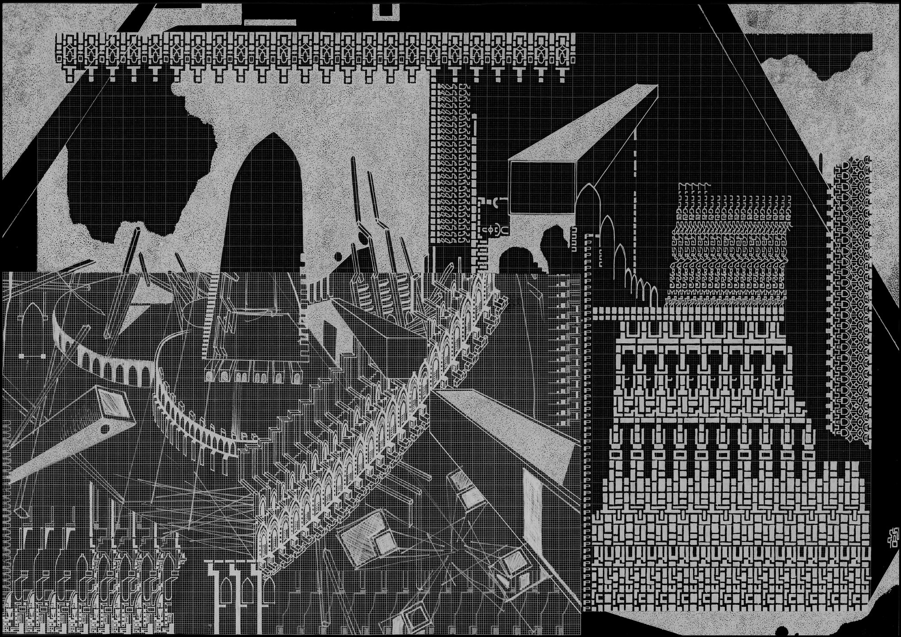
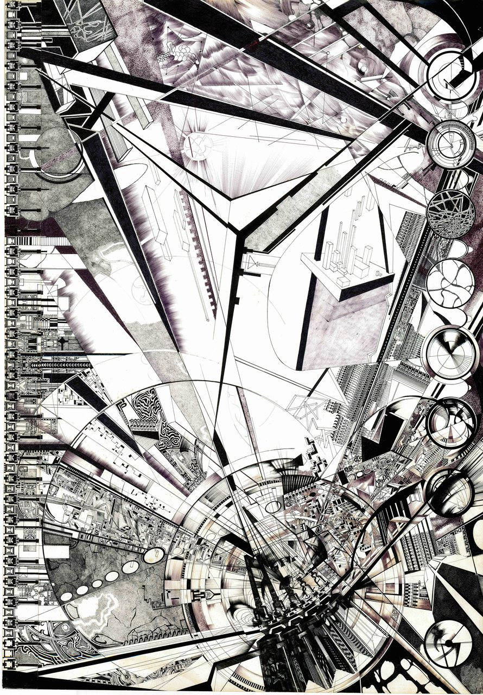
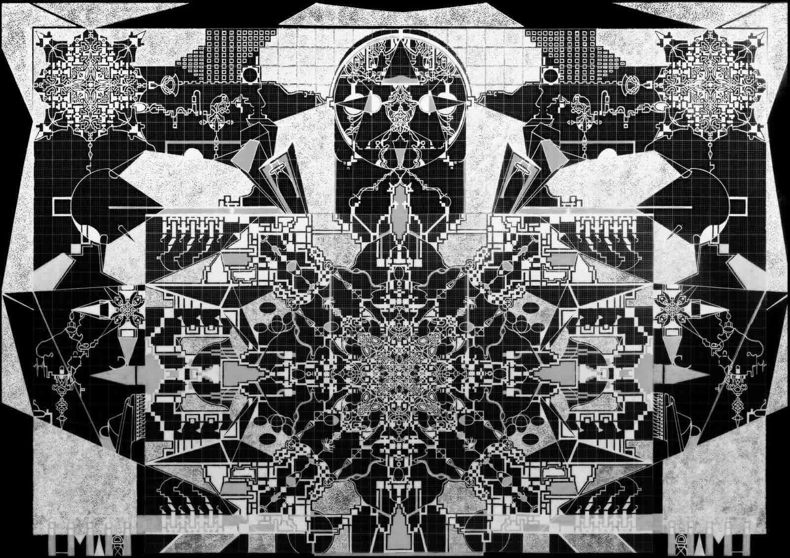
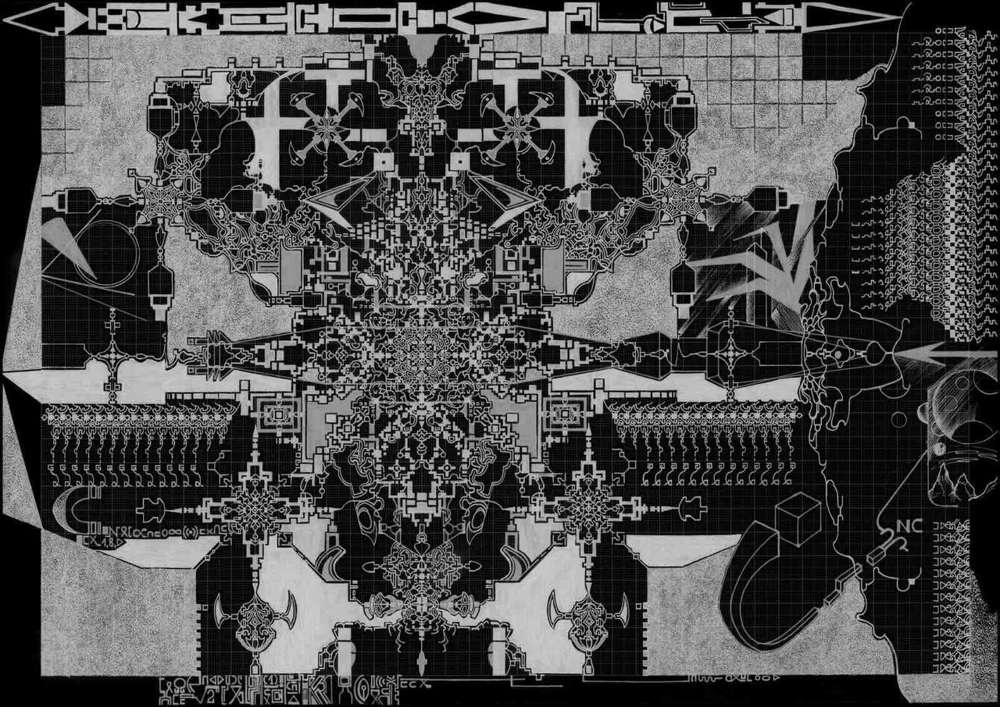
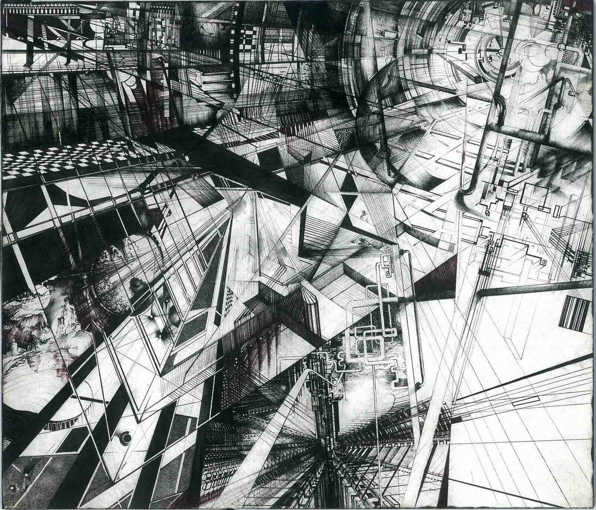
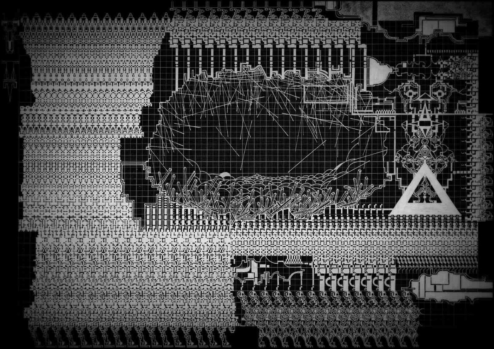
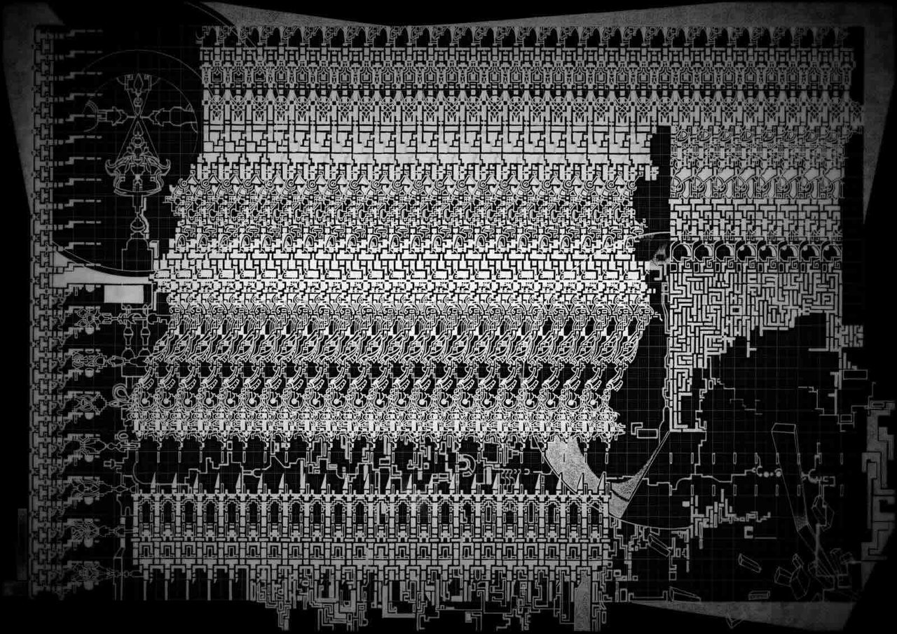
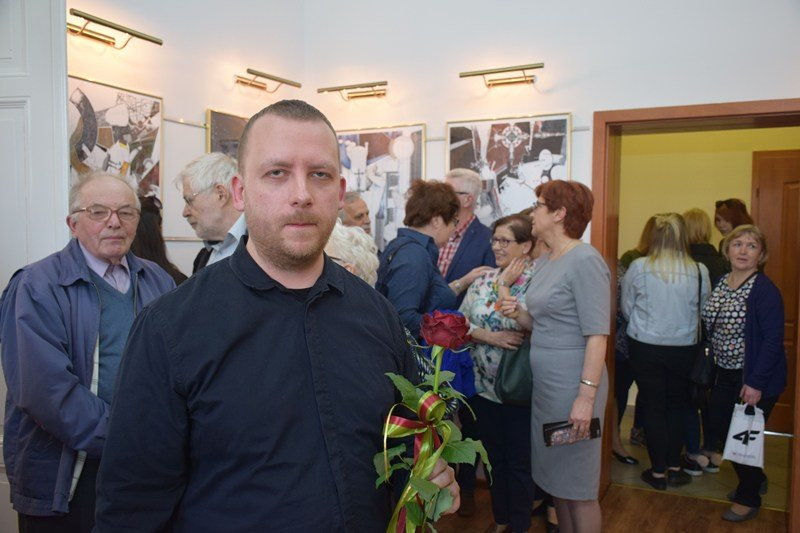

MŁ-007 / GREAT WORKSView plate ↗

+ Draughtsman — works on paper · est. archive
Maciej Małecki
Impossible architectures, built one ink line at a time.
+ 00 — Statement
RYSUNEK · TUSZ NA PAPIERZE
Each plate is a single continuous act of attention — a city that exists only on paper.
Maciej Małecki draws by hand, in ink, on paper — frequently on millimetre graph paper, the surveyor's grid still visible beneath the structures it can no longer contain. There is no digital stage, no render, no undo. A plate accretes line by line over weeks: colonnades, transepts, reliquaries and machine-choirs folding into one another until the page reaches a density that reads less like architecture than like a system that has begun to think.
The work sits between blueprint and reliquary — the cold precision of the technical drawing crossed with the obsessive ornament of cathedral and circuit. Read it as a declassified schematic for a world that was never built, indexed here as a working archive of seven plates.
+ 01 — Selected plates
07 / 07 · CLICK TO ENLARGE

MŁ-001 / ASCENSION SHAFTView plate ↗
Ascension
Shaft
MŁ-001
A central wedge of negative space splits a black accretion of towers and instrument dials — the eye is thrown upward through a structure that refuses a single vanishing point.

MŁ-003 / RELIQUARY GRIDView plate ↗
Reliquary Grid
MŁ-003
MŁ-005 / TRANSEPT ENGINEView plate ↗
Transept Engine
MŁ-005
MŁ-002 / INTERIOR, NO HORIZONView plate ↗
Interior, No Horizon
MŁ-002
MŁ-004 / EVENT BASINView plate ↗
Event Basin
MŁ-004
MŁ-006 / NINE ORDERSView plate ↗
Nine Orders
MŁ-006+ 02 — Process / density
NO DIGITAL · HAND ONLY
Drawn at the threshold where line becomes texture.
100%Hand-drawn
0pxDigital marks
0.1mmFinest nib
007Plates indexed
∞Vanishing points
+ 03 — The draughtsman
FIG. 08 — RECORD

A practice given entirely to the line.
Małecki works alone and slowly, in ink, refusing the shortcuts of the screen. The drawings are built the way buildings used to be — by hand, to the limit of the hand — until the paper holds more structure than a page should be able to carry.
Selected exhibitions ↳ placeholder records — replace in WordPress
- 20—Solo — Drawing ArchiveCity, PL
- 20—Group — Works on PaperCity, PL
- 20—Solo — Impossible CitiesCity, EU
- 20—Group — Line / DensityCity, EU
- 20—Open studioStudio, PL
+ 04 — Inquire
ORIGINALS · PRINTS · COMMISSIONS
Enter the archive ↗
For original drawings, archival prints, exhibition loans or commissions, write to the studio. Each plate is one of a kind.
studio@maciejmalecki.art ↗- Represented
- Available — by inquiry
- Studio
- Poland
- Response
- Within 3 working days